A walkthrough of the current build with notes on visual system, information architecture, onboarding, and the parts users actually touch. Severity tags reflect impact on first-time-user activation, not aesthetic taste.
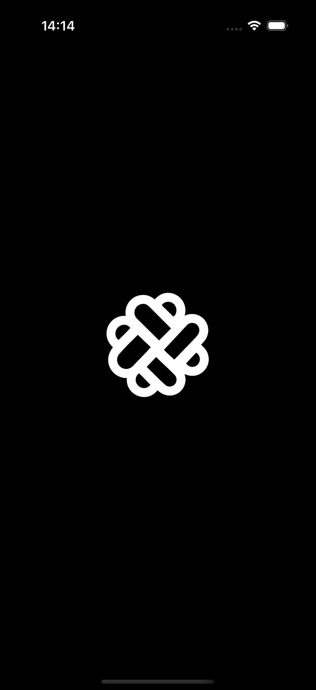
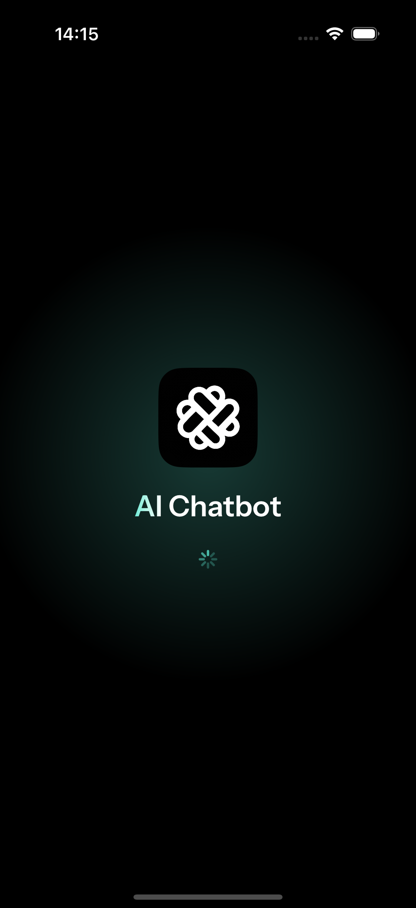
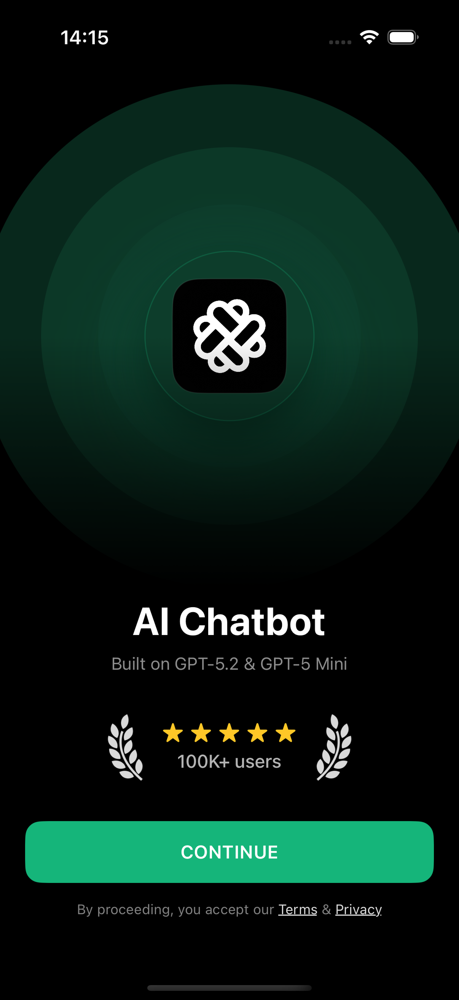
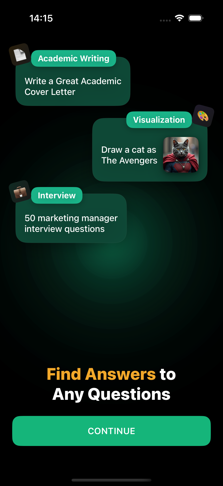
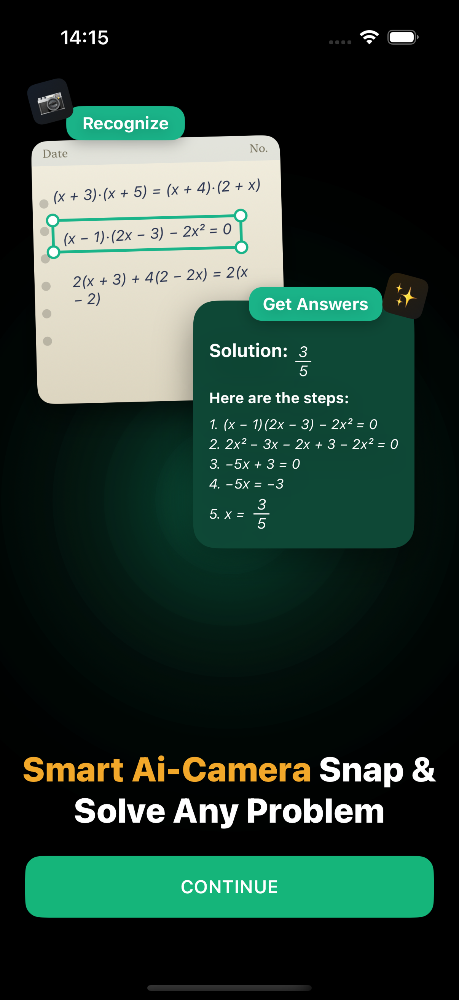
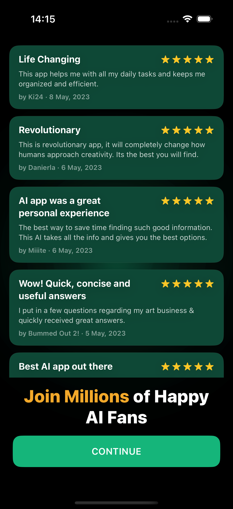
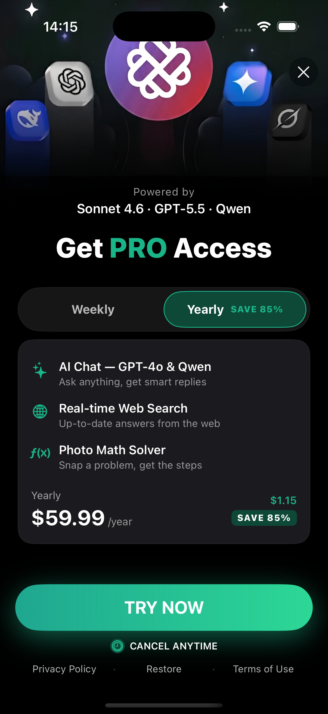
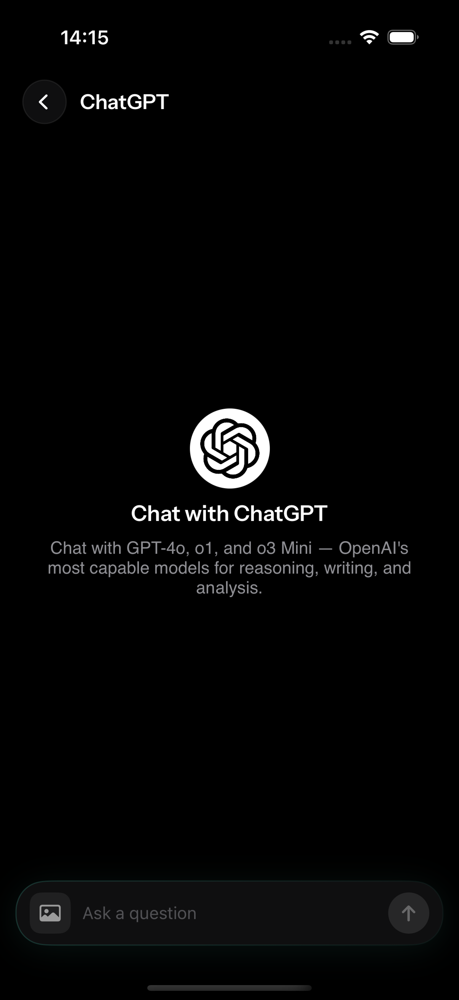
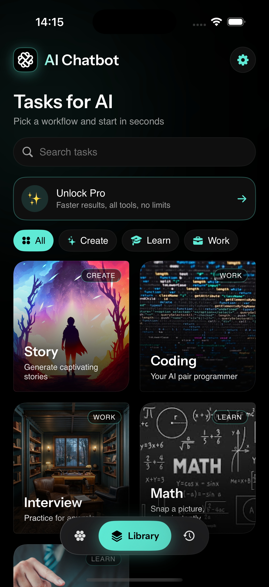
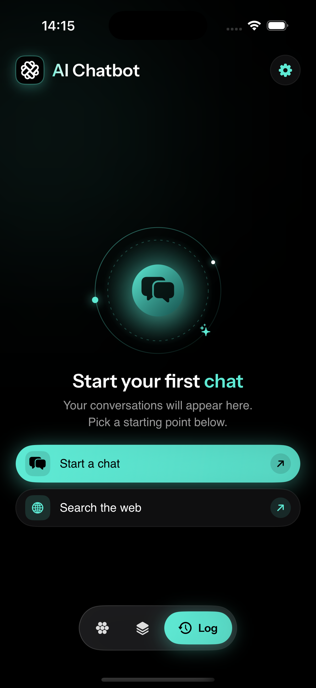
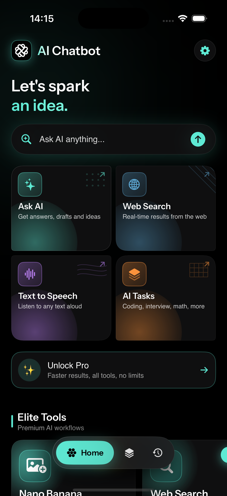
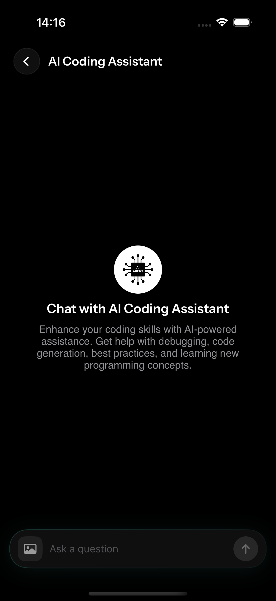
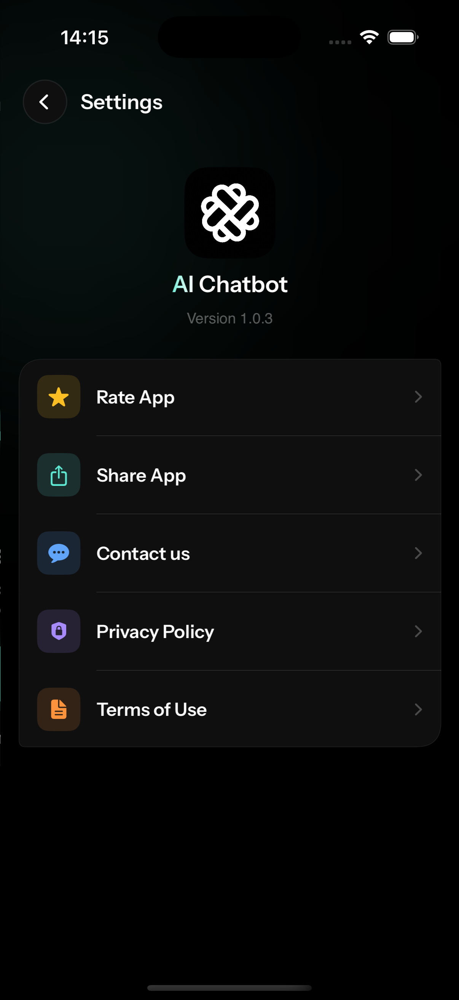
The user is asked to dismiss five screens before they're allowed to type a single message.
The problem: three greens that don't sit on the same scale. Mint is calm and premium, action is loud and saturated, forest is illustrative. The marketing-yellow callouts ("Smart Ai-Camera Snap & Solve", "Find Answers", "Join Millions") add a fourth temperature — closer to a hook-tactic ad than a product surface.
The good: hierarchy is legible, sizes are large enough on iPhone, body text never drops below 14 pt.
The risk: the "color the second word in the title" pattern ("an idea", "first chat", "Ai-Camera", "Find Answers") is doing too much work. By the fifth occurrence it stops feeling like emphasis and starts feeling like a tic.
Five different card styles, all on adjacent screens. Each looks competent in isolation; together they suggest a product still figuring out what kind of object a "thing-to-tap-on" is.
It announces the app to a user who already opened it. No personalization, no preview of what's inside, no choice — just a single CONTINUE that will lead to four more screens like it.
These screens duplicate the marketing material that convinced the user to download in the first place. They consume goodwill instead of building it.
It does the most to undermine trust because it tries the hardest to manufacture it. Five anonymous testimonials, all five-star, all dated May 2023 — inside a 2026 app.
In order down the page: hero, primary input, four quick-action cards, Pro upsell, "Elite Tools" carousel header, plus a teaser of the next carousel below the fold. That's six competing primary actions before scroll.
Every model lands the user on the same template: centered logo, one descriptive sentence, then a vast expanse of black above the composer. No suggested prompts, no recent prompts, no example of what "good" looks like.
"Explain this stack trace", "Refactor this function", "Write a SwiftUI list". Even three suggestions cuts cold-start cost dramatically. Right now the user has to invent the entire interaction.If the user does nothing, the screen tells them nothing. Empty states should always offer a next move.
| # | What's wrong | Why it matters | Cheapest move | Severity |
|---|---|---|---|---|
| 01 | Five-screen onboarding gauntlet before first chat | Each tap is a churn point. Drop-off compounds; a user excited enough to download should reach value in <10 seconds. | Collapse to one screen with a "Try a sample chat" CTA. Make the first chat itself the onboarding. | High |
| 02 | Chat empty states with no suggested prompts | This is the most-viewed screen in the app. Blank-page anxiety is the #1 reason new chat users disengage. | Add 3–4 model-specific starter prompts under the hero. Tap inserts into composer. | High |
| 03 | Fake-seeming review wall with 2023 dates | Actively erodes trust at the exact moment you're asking for it (right before the paywall). | Delete the screen. If social proof is needed, use a single quiet line on the paywall. | High |
| 04 | Home A vs Home B vs Library — three competing hubs | Forces the user to learn the IA before they can do anything. They will guess wrong twice. | Pick one: either a chat-first home (composer + recent chats) or a task-first home (templates + recent chats). Not both. | High |
| 05 | Pro upsell repeated mid-content on multiple tabs | Trust is spent before the user has experienced enough to want more. | One contextual upsell when a Pro-only action is attempted. Remove the always-on banners. | Medium |
| 06 | Three greens + marketing yellow in the same palette | Reads as unsettled. The brand has a moment (mint glow) — the rest fights it. | Pick one mint as the brand color and one accent for CTAs. Delete the yellow callout system entirely. | Medium |
| 07 | "Library" and "Log" don't describe what's in them | Two of three tabs are mis-labelled. Discoverability suffers; recall fails. | Rename to Tasks and Chats (or merge: chats with a "Templates" entry pinned at top). |
Medium |
| 08 | Five different card vocabularies | Each in isolation is fine; together they signal a product still finding itself. | Reduce to two: a "do something" tile and a "pick a thing" row. Apply consistently. | Medium |
| 09 | No model switcher inside a chat | Switching models is a core power-user move; right now it costs three taps. | Tappable model name in the chat header → bottom sheet picker. | Medium |
| 10 | Hero illustration on chat empty state is too small | Doesn't justify its space. Either it carries the screen or it gets out of the way. | Replace with starter-prompt cards (see #2). Reserve illustration for the model picker, not the chat. | Low |
Welcome + a single tappable demo prompt that opens a real chat with the model. No carousel, no reviews, no paywall before value. The first answer is the pitch.
Model name, brief identity, four starter prompts as tappable cards, recent chats below. This is the most-visited screen — design it like it is.
Chat-first (composer + recent + models pinned) or task-first (templates + recent). Pick one. Move the other to a single tab. Stop running both as competing home pages.
The product has a real visual identity worth keeping — the mint glow, the knot mark, the floating nav pill, the workflow posters. The work isn't to redesign the brand. It's to get out of its way so a user can talk to the AI within ten seconds of opening the app.